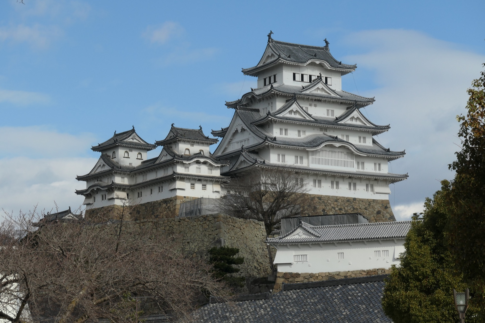

Tempat Wisata yang bisa dikunjungi di Jepang
- Okinawa Churaumi Aquarium
- Jigokudani Monkey Park
- Tōkyō Disneyland
- Kastil Himeji 
- Sensō Ji

Okinawa Aquarium Churaumi merupakan aqurium terbesar di Jepang yang memiliki daya tarik berupa Kuroshiyo Tank,
sebuah aquarium raksasa dimana pengunjung bisa menyaksikan kehidupan laut melalui terowongan yang tersedia.
Selain akuarium raksasa, di sana juga terdapat kolam outdooryang ketrap menghadirkan pertujukkan binatang laut
seperti lumba-lumba dan singa laut.

Tempat ini adalah salah satu tempat wisata yang menarik di Jepang. Kalian bisa melihat kawanan monyet mandi
setiap hari sepanjang tahun. Meskipun monyet-monyet ini berendam setiap hari sepanjang tahun, namun waktu terbaik
untuk datang adalah pada saat musim dingin, yaitu diantara Desember-Maret. Saat itu putih salju di sekitar permandian
Akan menambah kecantikan foto yang kalian ambil.
Jigokudani Monkey Park merupakan daerah sumber air panas yang terkenal di daerah dekat Nagano. Nama Jigokudani(yang
berarti 'Lembah Neraka') adalah karena uap dan airnya yang mendidih dan mengeluarkan gelembung tanah beku, dikelilingi
oleh bukit curam dan hutan dingin. Tempat wisata ini terkenal dengan populasi besar monyet salju liar yang pergi ke
lembah selama musin dingin ketika salju meliputi taman. Monyet-monyet itu akan turun dari tebing curam dan hutan untuk
duduk di air panas yang hangat dan akan krembali ke kedalaman hutan di malam hari.

Disneyland menjadi salah satu wahana wisata di Jepang yang selalu ramai dikunjungi wisatawan yang pergi berlibur ke
Jepang. Disini kita bisa menikmati berbagai wahana permainan dengan tema film-film yang diproduksi Walt Disney.
Tempat wisata ini merupakan Disneyland pertama yang dibangun di luar Amerika Serikat dan resmi dibuka pada tahun
1983. Tōkyō Disneyland dibagi menjadi 7 bagian utama yaitu; World Bazaar, Tomorrowland, Toontown, Adventureland,
Westernland, Critter Country dan Fantasyland. Masing-masing zona memiliki ciri khasnya sendiri.
Kastil Himeji menjadi tenpat wisata sejarah di Jepang yang tidak boleh dilewatkan. Kastil ini dulunyd dibuat untuk
melawan musuh selama periode feodal, tetapi telah direnovasi kembali berkali-kali selama berabad-abad dan mencerminkan
periode desain yang berbeda-beda.
Kastil ini selamat dalam pemboman Perang Dunia II dan Kastil ini sering terlihat
dalam film-film dalam dan luar negeri, termasuk film James Bond "You Only Live Twice". Eksterior putih dan desain
benteng yang menyerupai burung yang akan terbang.

Satu lagi bangunan bersejarah di Jepang yang menarik untuk dikunjungi, kuil Sensō-Ji atau dikenal dengan kuil
Kannon Asakusa yang terletak di Asakusa. Kuil yang sangat besar dan indah ini didominasi dengan cat merah dan dikelilingi
lampion-lampion yang digantung din atasnya. Pada hari libur tempat ini banyak dikunjungi oleh para peziarah. Kamu juga
bisa mengikuti ramalan, karena konon katanya ramalan di kuil ini sangatlah jitu! Selain itu, kalian juga bisa mendapatkan
jimat agar mendapatkan jodoh.
Jika kamu ingin mencari suvenir, kamu bisa mengunjungi Nakamise Dōri (Nakamise Shopping Street) di dekat gerbang
utama. Di jalan sepanjang 200-250 meter ini terdapat banyak penjual oleh-oleh khas Jepang.